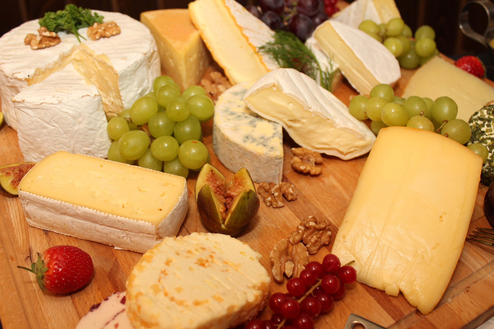

A loja Queijos Ao Seu Dispor foi criada por Gabriela Aparecida Rosa, em 06 de junho de 2024.
Tem como principal objetivo divulgar a venda de queijos caseiros e atender todos os tipos de paladares.
Nossa loja conta com 12 variação de queijos feitos com muito amor e carinho.
Patrocinadores: Fazenda Lima Rosa.
Telefone para contato: (43) 9 9935-6873
Email para contato: gabriela.aparecida.rosa@escola.pr.gov.br
